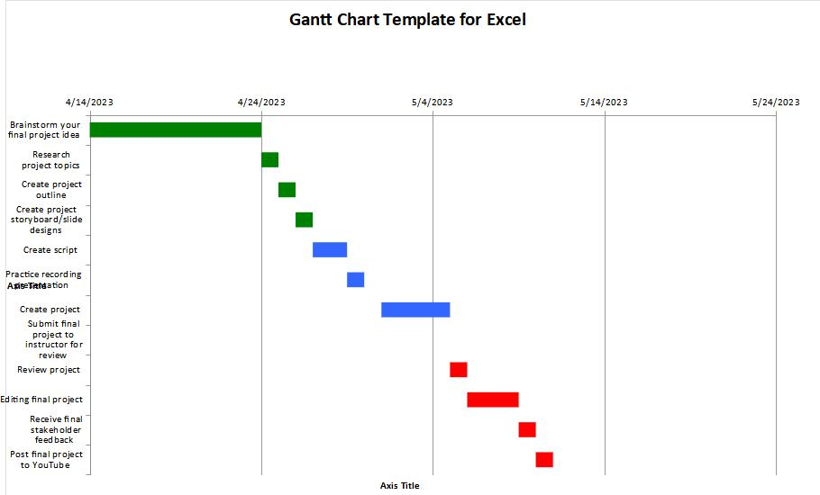

My Gantt Chart
Summary
This week I spent some time learning about project management, and also learning about a Gantt chart. This was really helpful because even though I like to try to stay organized, I can get busy and lose track of time doing something easily. Making the Gantt chart helps me to feel like this project is much more doable in the timeframe when it's broken down into smaller steps.
I am planning on making a video about the basics of HTML and CSS, geared towards the new students in the class, so I will explain how to use some of the elements used in our assignments, as well as a little CSS to make it styled for better readability and to make it a little more unique.